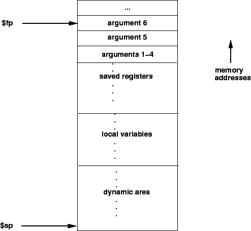

The calling convention described in this section is the one used by
gcc, not the native MIPS compiler, which uses a more complex
convention that is slightly faster.
Figure:
Layout of a stack frame. The frame pointer points just
below the last argument passed on the stack. The stack pointer points
to the last word in the frame.
|  |
Figure ![[*]](../../../usr/share/latex2html/icons/crossref.html) shows a diagram of a stack frame. A frame
consists of the memory between the frame pointer ($fp), which
points to the word immediately after the last argument passed on the
stack, and the stack pointer ($sp), which points to the last
word in the frame. As typical of Unix systems, the stack grows
down from higher memory addresses, so the frame pointer is above stack
pointer.
shows a diagram of a stack frame. A frame
consists of the memory between the frame pointer ($fp), which
points to the word immediately after the last argument passed on the
stack, and the stack pointer ($sp), which points to the last
word in the frame. As typical of Unix systems, the stack grows
down from higher memory addresses, so the frame pointer is above stack
pointer.
The following steps are necessary to effect a call:
- Pass the arguments. By convention, the first four arguments
are passed in registers $a0-$a3 (though simpler
compilers may choose to ignore this convention and pass all arguments
via the stack). The remaining arguments are pushed on the stack.
- Save the caller-saved registers. This includes registers $t0-$t9, if they contain live values at the call site.
- Execute a jal instruction.
Within the called routine, the following steps are necessary:
- Establish the stack frame by subtracting the frame size from
the stack pointer.
- Save the callee-saved registers in the frame. Register $fp is always saved. Register $ra needs to be saved if the
routine itself makes calls. Any of the registers $s0-$s7 that are used by the callee need to be saved.
- Establish the frame pointer by adding the stack frame size - 4
to the address in $sp.
Finally, to return from a call, a function places the returned value
into $v0 and executes the following steps:
- Restore any callee-saved registers that were saved upon entry
(including the frame pointer $fp).
- Pop the stack frame by adding the frame size to $sp.
- Return by jumping to the address in register $ra.
Ian Moor
2009-03-11